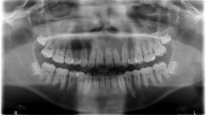

Procedure:
- When the patient has been positioned too far back the anterior teeth are out of focus and widened, which is sometimes hard to judge.
- Overall the image of the patient appears too large for the image receptor.
- The condyles are close to or off the lateral edges of image.
- The ghost image of the rami appear on the contralateral side superimposed over the ramus and posterior teeth.
- Also, the inferior turbinates and inferior meatus may be spread across the maxillary sinuses, bilaterally.
- Please refer to the image below for an example of the errors stated above.

|